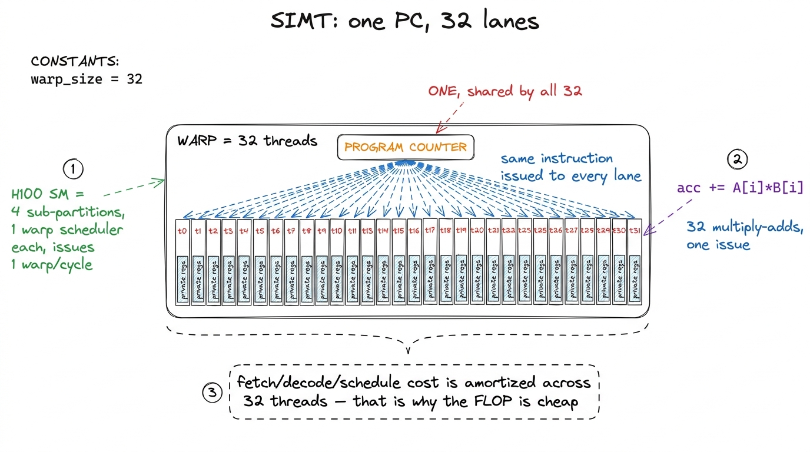
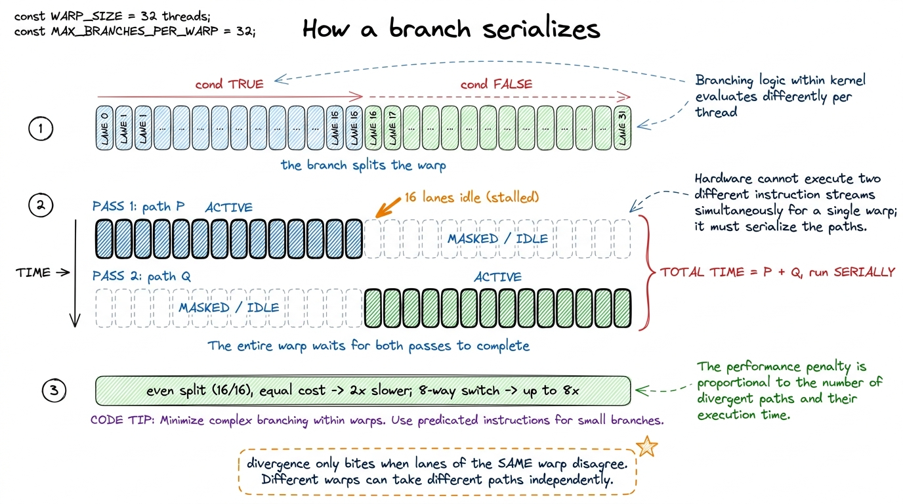
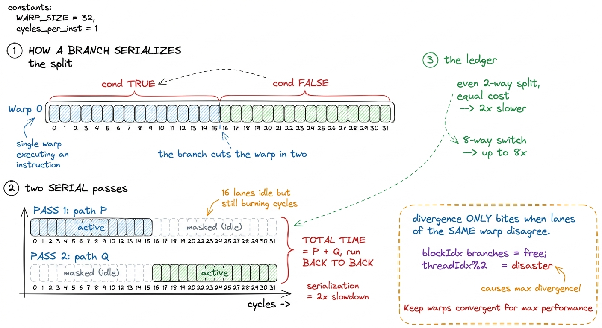
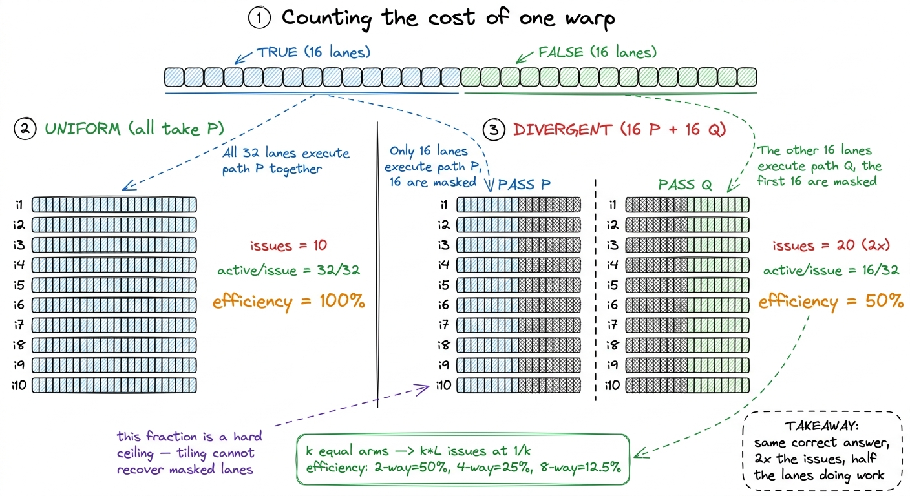
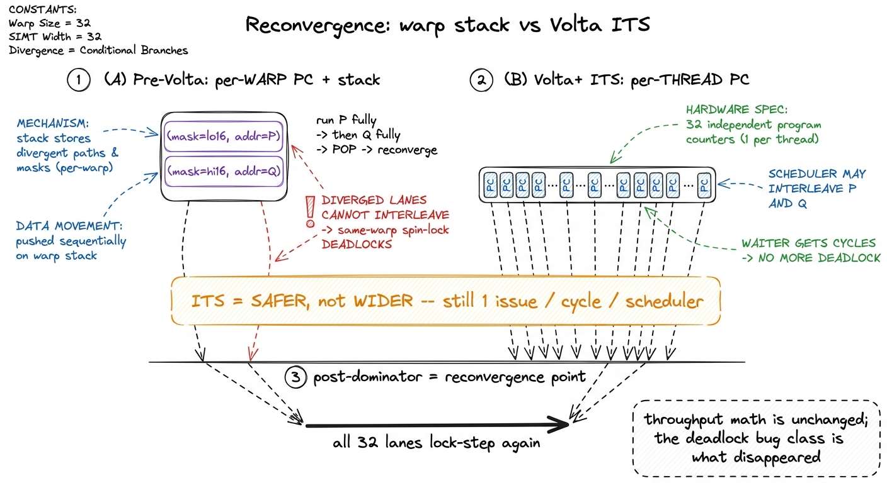
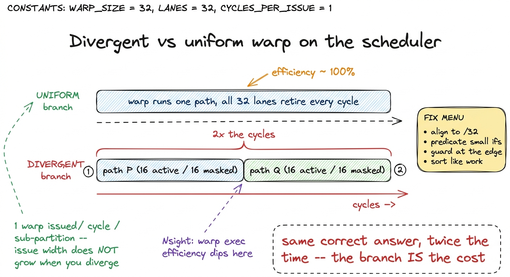

SIMT & warp divergence
The first time I profiled a kernel of mine and watched a single if cut the throughput in half, I assumed I had a bug. I did not — I had a warp.
Let me start from the very bottom, because everything in this article hangs on one fact that the CUDA programming model quietly hides from you. When I write a kernel, I write it as if each thread is its own little independent program. I say "let thread 5 do this, let thread 6 do that," and it reads like I am launching a thousand tiny sequential programs that happen to run side by side. That mental picture is comfortable, it is what the C++ code looks like, and it is wrong in a way that matters enormously for speed.
Here is the question this article answers: if my threads are not really independent little programs, what are they, and why does that turn one harmless if statement into a performance cliff? To answer it we need to look under the source code at what the hardware actually schedules. Once you see that, half the mysterious performance cliffs in GPU code stop being mysterious — they become predictable, and you can dodge them before you ever open a profiler.
No GEMM optimization here yet. Just the execution model I will lean on for the rest of the ladder. If you have never written a CUDA kernel, that is fine — I will build the picture from scratch.
The lie that makes GPUs easy to program
Start with a CPU, because that is the machine most people already have a model of. A CPU core is a lonely, powerful thing. It has one instruction pointer, it fetches one instruction, decodes it, runs it, moves on. To go fast it spends an absurd amount of silicon predicting what it will do next: branch predictors, out-of-order execution, speculative loads. All that machinery exists to keep a single stream of instructions fed. It is expensive, and it is per-core.
A GPU makes the opposite bet. Instead of one clever core chasing one instruction stream as fast as possible, it puts down thousands of dumb-but-cheap arithmetic lanes and tries to keep them all busy. The catch is obvious the moment you say it out loud: if you have thousands of lanes, you cannot afford a fetch-decode-predict unit for each one. That would just be a thousand CPUs, which is exactly the thing that was too expensive.
So the GPU cheats. It groups lanes together and makes them share the expensive parts. A fixed bundle of lanes gets one fetch, one decode, one program counter — and every lane in the bundle is dragged through that same instruction in the same cycle, each operating on its own data. That bundle is a warp, and on every NVIDIA GPU ever shipped it is exactly 32 threads wide.1 The warp size is 32 on every NVIDIA architecture since Tesla in 2006, but the programming model does not guarantee 32 — it exposes a built-in variable warpSize you can read. No shipping NVIDIA GPU has ever used another value, but portable code that hardcodes 32 will look sloppy to a reviewer; use warpSize when you mean "a warp."
This is the model NVIDIA calls SIMT — Single Instruction, Multiple Threads. It is the whole trick. The "lie" that each thread is an independent program is a deliberate, useful lie: it lets me write ordinary scalar-looking code (if, for, c = a + b) and have it run on a machine that is really a very wide vector processor wearing a costume. The compiler and hardware maintain the illusion right up until the moment my code asks two lanes in the same warp to do different things — and then the illusion cracks, and I pay for it. Understanding exactly where and why it cracks is the entire game.

figure rendering · The mental model for the whole article. A warp is a rowing crew: one cKeep the rowing crew in your head. One coxswain calling one stroke, thirty-two rowers each with their own oar and their own patch of water. We will come back to it every time something surprising happens.
One program counter, thirty-two threads
Now let me ground the crew in real silicon, because the exact hardware layout explains the numbers we will compute later.
A Streaming Multiprocessor (SM) — the GPU's fundamental compute tile, and you have 132 of them on an H100 — is itself divided into four processing blocks, also called SM sub-partitions. Think of one SM as four rowing lanes side by side. Each sub-partition has its own warp scheduler, its own slice of the register file, its own dispatch unit, and on Hopper its own set of FP32/INT32 arithmetic pipes plus a fourth-generation tensor core.2 A warp is assigned to exactly one sub-partition for its whole life and is never split across two. So when I say "the warp scheduler," I mean one of the four schedulers on the SM, each responsible for its own pool of warps. This is why occupancy is usually reasoned about per-sub-partition — see occupancy. The warp scheduler's whole job is small and relentless: every clock cycle, look at the warps it owns, pick one that is ready (its operands have arrived), and issue one instruction from it. That instruction fans out to 32 lanes, and lane i runs it on the registers of thread i.
Say that back slowly, because it is the load-bearing sentence of the article: the 32 threads of a warp share one program counter. One instruction stream. One fetch. One decode. Thirty-two sets of registers and thirty-two sets of data flowing through the same instruction. When my code says threadIdx.x, every lane reads its own lane index — same instruction, different register value. When it says acc += A[i] * B[i], all 32 lanes issue a multiply-add in the same cycle, each on its own operands. Thirty-two fused multiply-adds, one instruction issue.
Now the natural question: if the scheduler can only issue one instruction per cycle, how does the GPU ever hide the enormous latency of a memory load? A read from HBM takes hundreds of cycles. If the warp just sat there waiting, the lanes would be idle almost all the time and the whole cheap-FLOP argument would collapse. The answer is the second half of the scheduler's job, and it is beautiful: while one warp is stalled waiting on memory, the scheduler switches to a different ready warp and issues from that one instead. It keeps a pool of warps in flight and hops between them, cycle by cycle, so the arithmetic pipes almost never go idle.3 This is why GPU context switches are effectively free. A CPU switching threads has to save and restore registers — hundreds to thousands of cycles. A GPU warp's registers never move; every resident warp already has its own physical registers in the file, so the scheduler switches warps in about one cycle, roughly a nanosecond. The cost of keeping many warps resident is register pressure, which is the central tension of occupancy. That is what "latency hiding" means, and it is why a GPU wants many warps per SM even though it only issues one instruction at a time from each scheduler. The crew is cheap to swap because every rower keeps their own oar the whole time.

figure rendering · The warp is the real unit of execution. One instruction fetch feeds 32For a fuller tour of the memory hierarchy those loads pull from, see memory spaces and the register file; for the scheduler itself, the warp scheduler. Here I only need the one fact — one PC per warp — because that fact is about to cost me.
What a branch actually costs
Here is the trouble, and I want to reason it out before touching a profiler, because you can derive the cost from the rowing crew alone.
The coxswain calls one stroke at a time. Every rower must pull that same stroke. Now suppose I write source code that tells rowers 0–15 to do one thing and rowers 16–31 to do something else:
if (threadIdx.x < 16)
x = expensive_A(x); // path P
else
x = expensive_B(x); // path QAt the source level this reads like two disjoint groups doing two independent things at the same time. But there is only one coxswain and one program counter. There is physically no way to call two different strokes in one cycle. So the hardware does the only thing it can do: it runs both paths, one after the other, and uses a per-lane active mask to decide which lanes actually keep their results.
Walk through it concretely. First the warp executes path P with lanes 0–15 active and lanes 16–31 masked off. The masked lanes still go through the motions — they occupy the issue slot, they burn execution cycles — but their writes are thrown away. Then the warp executes path Q with the mask flipped: lanes 16–31 active, lanes 0–15 discarded. The two halves never overlap. They run serially, back to back.
This is warp divergence, and now I can put a number on it without any measurement. If both sides cost the same and the warp splits evenly, I pay the full time of P plus the full time of Q, and in each pass only half the lanes retire useful work. Time doubled, useful-work-per-cycle halved. I have paid twice for the same answer.4 The masked-off lanes are genuinely not free — they still consume an issue slot and execution-unit cycles, they simply do not retire results. This is the crucial point: divergence never corrupts correctness. The answer is exactly right. It is just slow. That is what makes it insidious — nothing crashes, the tests pass, and the kernel is quietly running at half speed.
It gets worse the more ways you split. A switch with eight cases that scatters one warp across all eight arms serializes, in the worst case, into eight passes, each with roughly 1/8 of the lanes doing useful work. That is close to a factor-of-8 haircut before any memory effect enters the picture.
Here is the detail that tripped me up the first time, and it is the single most important thing to internalize: divergence only costs you when the split happens inside a warp. A branch that every lane of a warp resolves the same way is completely free — the whole warp takes one side, no masking, no serialization, one pass. So the question is never "does my kernel have branches." Kernels are full of branches. The question is "does any branch split lanes within the same 32-lane bundle." That is why if (blockIdx.x == 0) is usually fine — whole blocks, and therefore whole warps, agree — while if (threadIdx.x % 2 == 0) is a catastrophe: it splits every warp cleanly down the middle.

figure rendering · Both sides of the branch execute, one after the other, inactive lanesA tiny example, counted by hand
Let me nail the cost down with arithmetic on a toy, because "twice as slow" deserves to be a number you can reproduce on a napkin.
Take one warp, 32 lanes. Say path P is 10 instructions and path Q is 10 instructions, and the warp splits evenly, 16 lanes each way. Ask two questions: how long does it take, and how efficiently did I use the lanes?
Uniform case first (all 32 lanes take the same side, say P). The warp issues 10 instructions, done. Every issue had all 32 lanes active. So: 10 issues, and average active lanes per issue = 32/32 = 100% warp execution efficiency.
Divergent case. The warp must run P for the 16 TRUE lanes and Q for the 16 FALSE lanes, serially. That is 10 issues for P (16 lanes active, 16 masked) then 10 issues for Q (16 active, 16 masked) = 20 issues total. Twice the uniform time. And the efficiency: every single one of those 20 issues had only 16 of 32 lanes active, so average active lanes per issue = 16/32 = 50%.
There is the "50%" you always hear, derived from nothing but counting. Now push it. A switch that splits one warp evenly across k arms of equal length L runs k × L issues instead of L, at 1/k efficiency. For k = 4 that is 4× the time at 25% efficiency; for k = 8, 8× the time at 12.5%. The ceiling on your throughput is exactly that efficiency fraction — no amount of tiling or coalescing can claw back lanes the branch is masking off.5 Real branches are rarely a perfectly even split, and the arms are rarely equal length, so the measured penalty is usually softer than the worst case. If 30 of 32 lanes take one side and 2 take the other, you pay for both passes but the minority pass is short and rare across the grid, so the aggregate hit is small. The worst case — an even split on two long, equal arms — is the one that halves you cleanly, and it is the one to hunt for.

figure rendering · The whole penalty derived by hand: divergence multiplies issue count bReconvergence, and what changed at Volta
If diverged lanes just kept diverging, a warp would fragment further at every branch until, deep in a nested if, the machine was effectively running one lane at a time. That does not happen, and the reason is reconvergence: after a divergent region, the hardware brings the lanes back in step.
Where does it rejoin? Historically at the compiler-computed immediate post-dominator of the branch — the first instruction that every path is guaranteed to reach no matter which side a lane took. In the if/else above, that is the statement right after the else closes. The classic pre-Volta mental model was a little hardware stack of (mask, address) entries: at a branch, push the two targets; run one side to the post-dominator; pop and run the other side to the same point; then restore the full 32-lane mask and march everyone forward together. Diverge, drain, rejoin.
That stack had a sharp edge, and it is worth understanding because it explains why modern warp intrinsics look the way they do. Because a diverged warp could only ever be executing one side at a time, and could not interleave the two, threads on opposite sides of a branch could not make progress cooperatively. Picture a spin-lock where lane 0 holds a lock and lane 1 waits on it, both in the same warp. Pre-Volta, the waiting lane is masked while the holder runs — but if the code structure kept the holder from ever being scheduled to release while lane 1 spun, lane 1 could spin forever, masked, never seeing the release. A same-warp deadlock. This was a real, documented footgun, and it burned me once.
Volta (2017) introduced Independent Thread Scheduling (ITS), and it has survived every architecture since — Turing, Ampere, Ada, Hopper, Blackwell. The change is deep: the hardware now maintains a program counter and a call stack per thread, not per warp. Each lane can, in principle, sit at a different point in the program.6 This is exactly why the .sync suffix appeared on Volta-era warp intrinsics — __shfl_sync, __ballot_sync, __syncwarp. Once lanes can sit at different PCs, the compiler can no longer assume all 32 are present when you do a warp shuffle. So you must pass an explicit mask naming the lanes you expect to participate, and the hardware reconverges exactly those. The old maskless __shfl was deprecated precisely because it silently assumed a convergence the new model no longer guarantees. The scheduler is now allowed to interleave diverged groups — run a few instructions of path P, hop to path Q, come back. That permission is what kills the deadlock: the waiting lane now gets issue cycles, observes the release, and proceeds. The spin-lock works.
And here is the part that genuinely surprised me the first time, so let me flag it loudly: ITS makes the model safer, not faster. Independent scheduling grants permission to interleave; it does not hand you 32 program counters' worth of execution width. There is still exactly one instruction issued per cycle per warp scheduler, and diverged lanes still do not retire in the same cycle. So every number I computed in the by-hand section is unchanged — a split warp is still 50% efficient. What disappeared is an entire class of correctness bug, not the throughput cost. The compiler still opportunistically reconverges at the post-dominator whenever it can prove it is safe, to claw back efficiency; ITS just no longer forces reconvergence to happen there.7 Which means under ITS you cannot assume lanes are lock-step at any point you did not explicitly demand it. If your algorithm needs all 32 lanes present at a spot — right before a warp shuffle, say — insert __syncwarp(mask), an explicit reconvergence barrier for the named lanes. Forgetting this is a common source of subtle post-Volta bugs where a shuffle reads stale data from a lane that had wandered ahead.

figure rendering · Both models rejoin at the post-dominator. Volta's per-thread PCs removAvoiding divergence in practice
Everything above collapses into one rule: make threads in the same warp agree. Notice how much weaker that is than "make all threads agree." I do not need branches to be globally uniform across the grid — I only need them uniform at warp granularity, in 32-lane chunks. That is a far more achievable condition, and a handful of patterns cover almost every case I hit in real kernels.
Align branches to warp boundaries. If a condition genuinely must differ across the grid, arrange for it to differ between whole warps rather than within a warp. Branching on threadIdx.x / 32 — the warp index inside the block — never diverges, because integer division by 32 gives every lane in a warp the same quotient. Branching on threadIdx.x % 2 diverges maximally, because it alternates lane by lane. Same intent, opposite cost. When I hand out work items, I give each warp a contiguous 32-item chunk instead of an interleaved stride, so the "which item do I own" branch stays uniform.
Turn small branches into arithmetic. A short if/else that only selects a value is often better written with no branch at all, so there is nothing to serialize:
// Diverges: two masked passes if lanes disagree.
float y = (x > 0.0f) ? a : b;
// Branch-free: one pass, arithmetic select, no serialization.
float m = (float)(x > 0.0f); // 1.0 or 0.0 per lane
float y = m * a + (1.0f - m) * b;You often do not even have to do this by hand — for a cheap two-sided select the compiler emits a predicated instruction rather than a real branch. A predicated instruction is issued to all 32 lanes uniformly; a per-lane predicate register just gates whether each lane commits the write-back. Every lane issues, nobody is masked into a separate serial pass, so there is no divergence penalty at all.8 In the SASS assembly you can see the difference directly: predication shows up as instructions guarded by a predicate register, like @P0 FADD R4, R4, R6, instead of a BRA jumping to two targets. Predication costs nothing in serialization — same instruction to every lane, the predicate only gates the store — but the compiler only picks it when both arms are short and side-effect-light. Long or heavy divergent regions still become real branches, which is exactly why I hoist expensive work out of ifs whenever I can. See PTX vs SASS for reading these listings.
Keep the boundary condition out of the hot loop. The most common accidental divergence I create is the tail check — the if (m < N && n < N) edge guard I wrote in the naive GEMM kernel. Here is the nice part: it only diverges in the handful of warps that straddle the actual matrix edge. Every interior warp evaluates the guard the same way (all lanes in-bounds), so the guard is free for them and only serializes at the ragged border. The total cost is tiny, which teaches the general lesson — push ragged-edge handling to the boundary and let the big uniform interior run one clean path.
Sort or bucket divergent work. Sometimes the data genuinely demands different code for different items — a ray tracer where some rays hit geometry and some miss, or a mixture-of-experts router where different tokens go to different experts. If those items land randomly across a warp, you diverge on every warp. The production move is to reorder the data first: group like items together so each warp gets 32 items that follow the same path. This "stream compaction" or sorting pass costs one trip over memory, but it can convert a 32-way-divergent kernel into a uniform one. It is exactly why real MoE kernels sort tokens by expert before the matmul, and why GPU ray tracers rebucket rays between bounces — the sort pays for itself many times over.

figure rendering · The scheduler's-eye view. A uniform warp is one bar; a divergent one iThe number, and the bridge
Let me put the whole thing on one dial you can actually read in a profiler. Nsight Compute reports a metric called warp execution efficiency: the average fraction of active lanes across every instruction the warp issued. It is exactly the fraction we counted by hand. A divergence-free inner loop sits at essentially 100% — every issue, all 32 lanes live. An evenly two-way-split loop is pinned at 50%, no matter how perfectly you tiled and coalesced everything else. A wide switch drags it toward 1/k.
That metric is a lie detector for the SIMT model. The first time I profiled a compute-bound kernel and saw warp execution efficiency sitting at 40–60%, that number was the diagnosis — a divergent branch was eating me alive, and I burned an afternoon on tiling changes that moved nothing until I found and killed the branch. The lesson stuck: when a compute-bound kernel underperforms and efficiency is low, stop tuning memory and go hunt the branch.
This is the same discipline I lean on everywhere in the three regimes: predict the effect from first principles, then measure. Before I open the profiler now, I read the kernel, find every branch, ask "does this split a warp," estimate the efficiency, and only then let Nsight confirm my guess or embarrass me. Once you can see divergence coming, SIMT stops being an abstraction you tiptoe around and becomes a lever you steer.
Next I leave the execution model and follow the data. Those same 32 lanes do not just execute together — they reach into memory together, and the hardware badly wants their 32 addresses to line up into one clean transaction. That is memory coalescing, and getting the access shape right took my GEMM ladder from a humiliating 1.3% of cuBLAS to 8.5% with a change of barely a line. Divergence was about which lanes run; coalescing is about where they point. Same crew, different question.